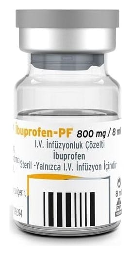

İbuprofen-Pf 800 mg/8 ml I.V. İnfüzyonluk Çözelti, 1 Adet

Ne için kullanılır
KT · Bölüm 1• İBUPROFEN-PF, damar içine uygulanan berrak, renksiz ve sarımsı bir çözeltidir. Her 8 mL çözelti 800 mg ibuprofen adı verilen bir etkin madde içerir. İBUPROFEN-PF’nin etkin maddesi olan ibuprofen, steroid olmayan antiinflamatuar ilaçlar (NSAİİ) olarak adlandırılan ağrı kesici bir ilaç grubuna aittir. Flakon içerisinde takdim edilen konsantre çözelti kullanılmadan mutlaka seyreltilmelidir. • İBUPROFEN-PF, tıpa ve flip-off kapak ile kapatılmış Tip I renksiz cam flakon içerisinde 1 veya 10 adet olarak takdim edilmektedir. • İBUPROFEN-PF aşağıda belirtilen durumlarda kullanılır: - Hafif ve orta dereceli ağrı tedavisinde, - Opioid analjeziklerle beraber orta ve ileri dereceli ağrı tedavisinde, - Ateş tedavisinde.